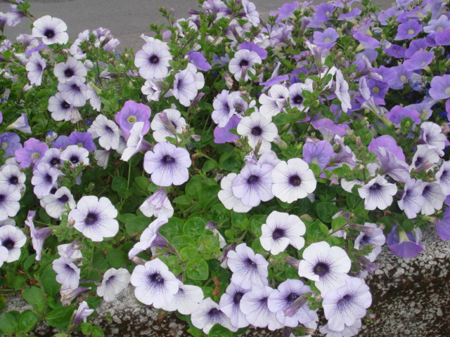
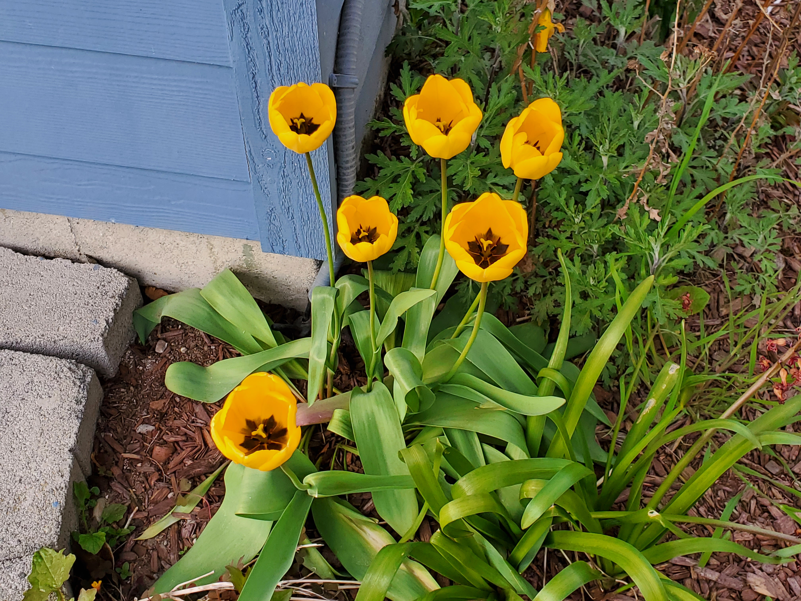

The person behind the parlor
About April
Hi, I'm April Yang, the person behind the Game Parlor.
I earned my Bachelor's degree in Web Development at Bellevue University, and I'm now pursuing a Master's in Computer Science at Northeastern University. I like building things in tech that help people live better, with conveniences that are people-friendly to use and playful. This little parlor of browser games is one of them.
Along the way I've sharpened my problem-solving and teamwork skills, both through my work experience and my studies. Curiosity and a love for learning are also among my strengths.
My goal is to grow into a Software Development Engineer, writing software that's thoughtful, reliable, and genuinely enjoyable to use.
I like flowers. Building a beautiful garden in the front yard of my home is my project when I'm away from the keyboard. Traveling to one new country every year is always part of my plan in life.
Away from the keyboard

